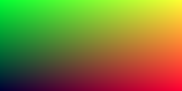

Introduction
Ce site est une traduction de l'excellente série de livres sur le raytracing de Peter Shirley. Le ray tracing, ou lancer de rayons en français, est une technique de calcul d'optique par ordinateur, notamment utilisée pour le rendu d'image de synthèse (source : Wikipedia). Cette traduction est rendue possible grâce au choix de l'auteur de publier ses écrits sous license permissive CC0 (anciennement payants).

Point de départ
J'ai enseigné pendant plusieurs années la programmation à destination de l'image. Souvent, j'enseigne le ray tracing (lancé de rayons), parce que vous êtes obligé d'écrire tout le code mais vous pouvez quand même obtenir des images super cools. J'ai décidé d'adapter mes notes de cours en manuel, pour que vous puissiez réaliser un programme cool, aussi vite que possible. Ca ne sera pas un moteur de rendu par lancé de rayons complet mais il sera capable d'illumination indirecte, ce qui a permis aux films de gagner en réalisme. Suivez ces étapes, et l'architecture du ray tracer que vous allez produire sera suffisante pour que vous puissiez construire un ray tracer plus complet par la suite.
Quand quelqu'un parle de "ray tracing", ça peut vouloir dire plusieurs choses. Ce que je m'aprête à décrire est techniquellement un "path tracer" assez général. Alors que le code que vous allez écrire est très simple (laissons l'ordinateur faire le travail !), je pense que vous serez très satisfait des images que vous pourrez créer avec.
Je vais vous expliquer comme coder un ray tracer dans l'ordre auquel j'ai été habitué à le faire, ainsi que quelques conseils de débogage. A la fin, vous aurez un ray tracer qui produira de belles images. Vous serez capable de faire ça normalement en un weekend. Si ça vous prend plus de temps, ne vous en faites pas. J'utilise le C++ comme langage de programmation, mais vous n'avez pas besoin de faire pareil. Cependant, je vous suggère de le faire, parce que le C++ est rapide, portable et que la plupart des moteurs de rendu de films et jeux vidéos sont écrits en C++. Notez que j'éviterai d'utiliser les fonctionnalités modernes du C++, mais l'héritage et la surcharge d'opérateur sont trop utiles aux ray tracers pour passer outre. Je montre tout le code utilisé, excepté pour quelques calculs très simples pour la classe vec3. Je crois beaucoup au dicton "c'est en faisant que l'on apprend".
L'intégralité du code source est disponible ici : https://github.com/RayTracing/raytracing.github.io/.
Je suppose que vous êtes un peu familier avec les vecteurs (comme le produit scalaire et l'addition de deux vecteurs). Si vous n'y connaissez rien, faites quelques recherches avant de poursuivre.
Peter Shirley, edited by Steve Hollasch and Trevor David Black
Version 3.0.1, 2020-03-31
Copyright 2018-2020 Peter Shirley. All rights reserved.
Traduction française par Hugues Gaillard.
Créer une image
A chaque fois que l'on démarre la création d'un moteur de rendu, nous avons besoin de voir une image. La façon la plus simple est d'écrire l'image dans un fichier. Le problème est qu'il existe un innombrable format d'images et que beaucoup d'entre eux sont complexes. Je commence toujours par des fichiers textes ppm. Wikipedia en fait une belle description :

Ecrivons un peu de C++ pour sortir un fichier similaire :
#include <iostream>
int main() {
const int image_width = 200;
const int image_height = 100;
std::cout << "P3\n" << image_width << ' ' << image_height << "\n255\n";
for (int j = image_height-1; j >= 0; --j) {
for (int i = 0; i < image_width; ++i) {
auto r = double(i) / image_width;
auto g = double(j) / image_height;
auto b = 0.2;
int ir = static_cast<int>(255.999 * r);
int ig = static_cast<int>(255.999 * g);
int ib = static_cast<int>(255.999 * b);
std::cout << ir << ' ' << ig << ' ' << ib << '\n';
}
}
}
Il y a plusieurs choses à noter dans ce code :
- Les pixels sont écrits en lignes, de la gauche vers la droite.
- Les lignes sont écrites du haut vers le bas.
- Par convention, chaque composant RVB(rouge/vert/bleu ou RGB en anglais) a une valeur allant de 0.0 à 1.0. Nous assouplirons cette contrainte plus tard quand nous utiliserons une plage HDR (high dynamic range), sachant qu'avant de sortir une image HDR nous allons contraindre les valeurs dans l'intervale de zéro à un, donc ce code ne changera pas.
- La composante rouge va du noir au maximum de gauche à droite et le vert va du noir en bas, jusqu'au maximum en haut. Le rouge et le vert ensemble forment du jaune, donc on doit s'attendre à ce que coin supérieur droit soit jaune.
Parce que le programme n'écrit pas directement dans un fichier mais dans sa sortie standard, nous avons besoin de rédiger celle-ci dans un fichier. Généralement, c'est fait depuis la ligne de commande en utilisant le chevron '>' pour rediriger la sortie vers un fichier :
build\Release\inOneWeekend.exe > image.ppm
sous Windows, et pour Mac & Linux :
build/inOneWeekend > image.ppm
Nous pouvons ouvrir le fichier ainsi créé (avec 'ToyViewer' sur mon Mac par exemple) et nous obtenons le résultat suivant :

Hooray! C'est un peu le 'hello world' en graphique. Si votre image ne ressemble pas à ça, ouvrez le fichier avec un éditeur de texte et regardez à quoi il ressemble. Il devrait commencer par :
P3
200 100
255
0 253 51
1 253 51
2 253 51
3 253 51
5 253 51
6 253 51
7 253 51
8 253 51
Si ce n'est pas le cas, vous avez peut-être des nouvelles lignes ou quelque chose comme ça.
Si vous voulez produire des formats autres que le PPM, je suis un fan de stb_image.h disponible sur Github.
Ajouter un indicateur de progression
Avant de continuer, ajoutons un indicateur de progression à notre sortie. C'est une façon pratique de suivre la progression d'un long rendu, et aussi une manière d'identifier un lancement bloqué à cause d'une boucle infinie ou d'un autre problème.
Notre programme sort l'image via la sortie standard (std::cout), donc nous laissons ça et on affiche la progression plutôt via la sortie d'erreur (std::cerr) :
for (int j = image_height-1; j >= 0; --j) {
std::cerr << "\rScanlines remaining: " << j << ' ' << std::flush;
for (int i = 0; i < image_width; ++i) {
auto r = double(i) / image_width;
auto g = double(j) / image_height;
auto b = 0.2;
int ir = static_cast<int>(255.999 * r);
int ig = static_cast<int>(255.999 * g);
int ib = static_cast<int>(255.999 * b);
std::cout << ir << ' ' << ig << ' ' << ib << '\n';
}
}
std::cerr << "\nDone.\n";
La classe vec3
Quasiment tous les programmes graphiques utilisent une ou plusieurs classes pour stocker des vecteurs pour la géométrie et des couleurs. Dans beaucoup de ces systèmes, il s'agit de vecteur 4D (3D + une coordonnée homogène pour la géométrie ou + une composante 'alpha' de transparence pour les couleurs).
Pour notre besoin, 3 coordonnées suffisent. Nous allons donc utiliser la classe vec3 pour les couleurs, les positions, les directions, les décalages, etc. Certaines personnes n'aiment pas ça parce que cette méthode ne vous empêche pas de faire des choses stupides, comme ajouter une couleur et une position ensemble. C'est un bon point, mais nous allons choisir la voie du plus simple lorsque ce n'est pas expressement faux.
Voici une implémentation possible de cette classe vec3 :
#include <iostream>
class vec3 {
public:
vec3() : e{0,0,0} {}
vec3(double e0, double e1, double e2) : e{e0, e1, e2} {}
double x() const { return e[0]; }
double y() const { return e[1]; }
double z() const { return e[2]; }
vec3 operator-() const { return vec3(-e[0], -e[1], -e[2]); }
double operator[](int i) const { return e[i]; }
double& operator[](int i) { return e[i]; }
vec3& operator+=(const vec3 &v) {
e[0] += v.e[0];
e[1] += v.e[1];
e[2] += v.e[2];
return *this;
}
vec3& operator*=(const double t) {
e[0] *= t;
e[1] *= t;
e[2] *= t;
return *this;
}
vec3& operator/=(const double t) {
return *this *= 1/t;
}
double length() const {
return sqrt(length_squared());
}
double length_squared() const {
return e[0]*e[0] + e[1]*e[1] + e[2]*e[2];
}
void write_color(std::ostream &out) {
// Write the translated [0,255] value of each color component.
out << static_cast<int>(255.999 * e[0]) << ' '
<< static_cast<int>(255.999 * e[1]) << ' '
<< static_cast<int>(255.999 * e[2]) << '\n';
}
public:
double e[3];
};
Nous utilisons des double ici, mais certains ray tracers fonctionnent avec des float. C'est selon votre propre goût. La seconde partie du fichier header contient des fonctions utilitaires relatives aux vecteurs :
// vec3 Utility Functions
inline std::ostream& operator<<(std::ostream &out, const vec3 &v) {
return out << v.e[0] << ' ' << v.e[1] << ' ' << v.e[2];
}
inline vec3 operator+(const vec3 &u, const vec3 &v) {
return vec3(u.e[0] + v.e[0], u.e[1] + v.e[1], u.e[2] + v.e[2]);
}
inline vec3 operator-(const vec3 &u, const vec3 &v) {
return vec3(u.e[0] - v.e[0], u.e[1] - v.e[1], u.e[2] - v.e[2]);
}
inline vec3 operator*(const vec3 &u, const vec3 &v) {
return vec3(u.e[0] * v.e[0], u.e[1] * v.e[1], u.e[2] * v.e[2]);
}
inline vec3 operator*(double t, const vec3 &v) {
return vec3(t*v.e[0], t*v.e[1], t*v.e[2]);
}
inline vec3 operator*(const vec3 &v, double t) {
return t * v;
}
inline vec3 operator/(vec3 v, double t) {
return (1/t) * v;
}
inline double dot(const vec3 &u, const vec3 &v) {
return u.e[0] * v.e[0]
+ u.e[1] * v.e[1]
+ u.e[2] * v.e[2];
}
inline vec3 cross(const vec3 &u, const vec3 &v) {
return vec3(u.e[1] * v.e[2] - u.e[2] * v.e[1],
u.e[2] * v.e[0] - u.e[0] * v.e[2],
u.e[0] * v.e[1] - u.e[1] * v.e[0]);
}
inline vec3 unit_vector(vec3 v) {
return v / v.length();
}
Maintenant, nous pouvons changer notre fonction main pour utiliser cette classe :
#include "vec3.h"
#include <iostream>
int main() {
const int image_width = 200;
const int image_height = 100;
std::cout << "P3\n" << image_width << ' ' << image_height << "\n255\n";
for (int j = image_height-1; j >= 0; --j) {
std::cerr << "\rScanlines remaining: " << j << ' ' << std::flush;
for (int i = 0; i < image_width; ++i) {
vec3 color(double(i)/image_width, double(j)/image_height, 0.2);
color.write_color(std::cout);
}
}
std::cerr << "\nDone.\n";
}
Des rayons, une caméra et un arrière-plan
Le point commun de tous les ray tracers, c'est une classe permettant de modélisation un rayon de lumière (ray) et un calcul déterminant la couleur vue le long de ce rayon.
Nous pouvons modéliser un rayon comme une fonction :
\[ p(t)=a+t \vec{b} \]
Ici \( p \) est une position 3D le long d'une ligne 3D. \( a \) est l'origine du rayon et \( \vec{b} \) est la direction du rayon. Le rayon a également un paramètre \( t \), un nombre réel (double dans le code).
Fournir un \( t \) différent et \( p(t) \) déplacera le point le long du rayon. Ajoutez un \( t \) négatif et on peut se déplacer n'importe où le long de cette ligne 3D. Pour un \( t \) positif, on peut se déplacer seulement sur la partie en face de \( a \), et c'est ce qu'on appelle souvent une demi-ligne ou rayon.

La fonction \( p(t) \) peut se modéliser comme une classe ray pour laquelle on implémente une fonction ray::at(t) :
#ifndef RAY_H
#define RAY_H
#include "vec3.h"
class ray {
public:
ray() {}
ray(const vec3& origin, const vec3& direction)
: orig(origin), dir(direction)
{}
vec3 origin() const { return orig; }
vec3 direction() const { return dir; }
vec3 at(double t) const {
return orig + t*dir;
}
public:
vec3 orig;
vec3 dir;
};
#endif
Maintenant, nous sommes fins prêts à implémenter un ray tracer. A son coeur, le ray tracer envoie des rayons pour chaque pixel de l'image et calcule la couleur perçue dans la direction de ces rayons. Les étapes sont donc au nombre de 3 :
- calculer le rayon depuis l'oeil (la caméra) au pixel
- déterminer quels objets le rayon va traverser (calcul d'intersection)
- calculer une couleur sur ce point d'intersection.
Quand je développe un ray tracer, je commence par créer une caméra simple pour pouvoir visualiser et débugger mon code. Je fais également une petite fonction color(ray) qui retourne la couleur de l'arrière-plan (un simple dégradé).
Je tombe souvent sur des problèmes quand j'utilise des images carrées pour déboguer car je transpose \(x\) et \(y\) trop souvent, donc je fais des images en \(200\times100\).
Je mets "l'oeil" (le centre de la caméra) aux coordonnées \((0,0,0)\). Je place l'axe \(y\) qui pointe vers le haut et l'axe \(x\) dirigé vers la droite. Pour respecter la convention d'un système de coordonées 'main droite', je place un axe \(z\) négatif vers l'écran. Je balaye l'écran depuis le coin inférieur gauche et j'utilise 2 vecteurs de décalage le long des côtés de l'écran pour déplacer le bout du rayon sur la surface de l'écran. Notez que le vecteur de direction n'est pas un vecteur de longueur normalisé (longueur unitaire) parce que je pense que ça rend le code plus simple et légèrement plus rapide.

Dessous en code, le rayon \(r\) est approximativement dirigé vers les centres des pixels (je ne me focalise pas sur l'exatitude pour l'instant car nous ajouterons l'antialiasing plus tard).
#include "ray.h"
#include <iostream>
vec3 ray_color(const ray& r) {
vec3 unit_direction = unit_vector(r.direction());
auto t = 0.5*(unit_direction.y() + 1.0);
return (1.0-t)*vec3(1.0, 1.0, 1.0) + t*vec3(0.5, 0.7, 1.0);
}
int main() {
const int image_width = 200;
const int image_height = 100;
std::cout << "P3\n" << image_width << " " << image_height << "\n255\n";
vec3 lower_left_corner(-2.0, -1.0, -1.0);
vec3 horizontal(4.0, 0.0, 0.0);
vec3 vertical(0.0, 2.0, 0.0);
vec3 origin(0.0, 0.0, 0.0);
for (int j = image_height-1; j >= 0; --j) {
std::cerr << "\rScanlines remaining: " << j << ' ' << std::flush;
for (int i = 0; i < image_width; ++i) {
auto u = double(i) / image_width;
auto v = double(j) / image_height;
ray r(origin, lower_left_corner + u*horizontal + v*vertical);
vec3 color = ray_color(r);
color.write_color(std::cout);
}
}
std::cerr << "\nDone.\n";
}
La fonction ray_color(ray) mélange linéairement du blanc et du bleu selon la hauteur de la coordonnée \(y\) après avoir redimensionner la direction du rayon en vecteur unitaire (normalisé) (donc \(-1.0 < y < 1.0\)).
Parce qu'on est en train de regarder la hauteur \(y\) après avoir normalisé le vecteur, vous remarquerez un dégradé horizontal vers la couleur en plus du dégradé vertical.
Ensuite, je redimensionne grâce une astuce classique de manière à ce que \(0.0 \leq t \leq 1.0\). Quand \(t=1.0\) je veux du bleu. Quand \(t=0.0\), je veux du blanc. Et entre, je veux un dégradé. Cela forme un dégradé linéaire, ou interpolation linéaire, ou 'lerp' (de linear interpolation). Une interpolation linéaire est toujours de la forme :
\[ \text{blendedValue} = (1-t) \times \text{startValue} + t \times \text{endValue} \]
avec \(t\) allant de 0 à 1. Dans notre cas, le code suivant produit :

Ajouter une sphère
Ajoutons un seul objet à notre ray tracer. Beaucoup de personnes utilisent des sphères dans les ray tracers car calculer si un rayon frappe une sphère est assez simple. Rappelez-vous de l'équation pour une sphère centrée sur l'origine du rayon \(R\) est \(x^2 + y^2 + z^2 = R^2\). D'une autre façon, pour un point \((x,y,z)\) placé sur la sphère, alors \(x^2+y^2+z^2=R^2\). Si le point \((x,y,z)\) est à l'intérieur de la sphère, alors \(x^2+y^2+z^2 \lt R^2\) et si un point \((x,y,z)\) est à l'extérieur de la sphère, alors \(x^2+y^2+z^2 \gt R^2\).
Ca se complexifie un peu si le centre de la sphère est donnée par \( (c_x, c_y, c_z)\) :
\[ (x-c_x)^2 + (y-c_y)^2 + (z-c_z)^2 = R^2 \]
Dans le graphisme, vous voulez quasiment toujours que vos formules soient en termes de vecteurs pour que tous les trucs x/y/z soient gérés par la classe vec3. Ainsi, notez que le vecteur de centre \( c=(c_x,c_y,c_z) \) au point \(P=(x,y,z)\) est noté \( (p-c) \). Donc :
\[ (p-c) \cdot (p-c) = (x-c_x)^2 + (y-c_y)^2 + (z-c_z)^2 \]
L'équation de la sphère est terme de vecteurs s'écrit alors :
\[ (p-c) \cdot (p-c) = R^2 \]
On peut lire cette équation comme "tout point \(p\) qui satisfait l'équation est sur la sphère".
Nous voulons savoir si notre rayon \( p(t)=a+t \vec{b} \) touche la sphère quelque part. S'il touche la sphère, il y a un \(t\) pour lequel \(p(t)\) satisfait l'équation de la sphère. Donc, nous cherchons un \(t\) où la relation suivante est vraie :
\[ (p(t) - c) \cdot (p(t) - c) = R^2 \]
ou, sous sa forme développée du rayon \(p(t)\) :
\[ (a+t\vec{b} - c) \cdot (a+t\vec{b} - c)=R^2 \]
En suivant les règles de l'algèbre appliquées aux vecteurs, si nous développons cette équation et que nous déplaçons tous ses termes à gauche, nous obtenons :
\[ t^2\vec{b} \cdot \vec{b} + 2t\vec{b} \cdot (a \vec{-} c) + (a \vec{-} c) \cdot (a \vec{-} c) - R^2 = 0 \]
Les vecteurs et R dans cette équation sont tous constants et connus. L'inconnu est \(t\) et l'équation est quadratique, comme vous l'avez surement vu en cours de maths au lycée. Nous pouvons résoudre cette équation pour \(t\) et il y a une racine qui est soit positive (donc 2 solutions réelles), soit négative (aucune solution dans l'espace des réels) ou zéro (une seule solution). Dans le graphisme, l'algèbre a toujours une relation très directe avec la géométrie.
Ce que nous avons est :

Si nous transposons ces maths en code dans notre programme, nous pouvons tester ça en colorant en rouge chaque pixel qui touche une petite sphère que nous plaçons à \(-1\) sur l'axe Z.
bool hit_sphere(const vec3& center, double radius, const ray& r) {
vec3 oc = r.origin() - center;
auto a = dot(r.direction(), r.direction());
auto b = 2.0 * dot(oc, r.direction());
auto c = dot(oc, oc) - radius*radius;
auto discriminant = b*b - 4*a*c;
return (discriminant > 0);
}
vec3 ray_color(const ray& r) {
if (hit_sphere(vec3(0,0,-1), 0.5, r))
return vec3(1, 0, 0);
vec3 unit_direction = unit_vector(r.direction());
auto t = 0.5*(unit_direction.y() + 1.0);
return (1.0-t)*vec3(1.0, 1.0, 1.0) + t*vec3(0.5, 0.7, 1.0);
}
Nous obtenons :

Il manque encore toute sorte de choses, comme le shading (l'ombrage), les rayons de réflexions, d'autres objets... mais nous avons déjà fait plus que la moitié du chemin depuis que nous avons commencé ! Une chose à garder en mémoire est que nous avons testé si le rayon touche la sphère (ou pas), mais les solutions de \(t<0\) fonctionnent biens également. Si vous changez le centre de la sphère à \(z=+1\) vous aurez exactement la même image parce que vous voyez les choses derrière vous... Ce n'est pas normal, nous corrigerons ça bientôt.
Normale à une surface et plusieurs objets
Premièrement, définissons ce qu'est une normale, puis utilisons ce concept pour nuancer/ombrager les objets. Une normale est un vecteur qui est perpendiculaire à la surface au point d'intersection. Il y a deux façons de concevoir des normales. La première est de faire une normale à partir d'un vecteur de longueur unitaire. C'est pratique pour nuancer/ombrager donc je dirai que c'est une bonne solution, mais comme dit précédemment, je ne vais pas le faire dans le code. Ca peut entrainer des bugs difficiles à débusquer.
Pour une sphère, la normale extérieure est dans la direction du point d'impact, auquel on aurait soustrait la position du centre :

Si on prend la terre pour exemple, ça implique donc que le vecteur qui part du centre de la terre au point jusqu'à vous pointe vers le haut.
Implémentons ça et voyons le résultat.
Pour l'instant, nous n'avons aucune lumière donc nous allons devoir visualiser les normales en utilisant un jeu de couleurs. Une astuce utilisée fréquemment pour la visualisation de normales (car facile et intuitif d'assumer que \(N\) est un vecteur de longueur unitaire, donc chacun de ses composants est entre -1 et 1) est d'associer à chaque composant de l'intervalle 0 à 1, la valeur x/y/z en r/g/b. Pour une normale, nous avons besoin du point d'intersection, pas seulement savoir si le rayon a touché ou non la sphère. Nous allons assumer que la normale est désignée par le point d'intersection le plus proche (le plus petit \(t\) possible).
Notre code modifié qui nous permet de calculer et visualiser \(N\) est le suivant :
double hit_sphere(const vec3& center, double radius, const ray& r) {
vec3 oc = r.origin() - center;
auto a = dot(r.direction(), r.direction());
auto b = 2.0 * dot(oc, r.direction());
auto c = dot(oc, oc) - radius*radius;
auto discriminant = b*b - 4*a*c;
if (discriminant < 0) {
return -1.0;
} else {
return (-b - sqrt(discriminant) ) / (2.0*a);
}
}
vec3 ray_color(const ray& r) {
auto t = hit_sphere(vec3(0,0,-1), 0.5, r);
if (t > 0.0) {
vec3 N = unit_vector(r.at(t) - vec3(0,0,-1));
return 0.5*vec3(N.x()+1, N.y()+1, N.z()+1);
}
vec3 unit_direction = unit_vector(r.direction());
t = 0.5*(unit_direction.y() + 1.0);
return (1.0-t)*vec3(1.0, 1.0, 1.0) + t*vec3(0.5, 0.7, 1.0);
}
Ce qui nous donne l'image suivante :

Chaque pixel de la sphère est coloré selon son vecteur normal.
Revisitons l'équation de l'intersection d'un rayon et d'une sphère, précédemment nous avions :
vec3 oc = r.origin() - center;
auto a = dot(r.direction(), r.direction());
auto b = 2.0 * dot(oc, r.direction());
auto c = dot(oc, oc) - radius*radius;
auto discriminant = b*b - 4*a*c;
Déjà, souvenez-vous qu'un vecteur dont on fait le produit scalaire (dot product) avec lui-même est égal au carré de la longueur de ce vecteur. Deuxièmement, notez comment l'équation suivante a un facteur 2 pour \(b\). Observez ce qu'il se passe à l'équation quadratique si \(b=2h\) :
\[ -b \pm \sqrt{b^2 - 4ac} \over{2a}\]
\[ = \frac{-2h \pm \sqrt{(2h)^2 - 4ac}}{2a}\]
\[ = \frac{-2h \pm 2\sqrt{h^2 - ac}}{2a}\]
\[ = \frac{-h \pm \sqrt{h^2 - ac}}{a}\]
En utilisant ces observations, nous pouvons simplifier le code par ça :
vec3 oc = r.origin() - center;
auto a = r.direction().length_squared();
auto half_b = dot(oc, r.direction());
auto c = oc.length_squared() - radius*radius;
auto discriminant = half_b*half_b - a*c;
if (discriminant < 0) {
return -1.0;
} else {
return (-half_b - sqrt(discriminant) ) / a;
}
Maintenant, comment gérer plusieurs sphères ? Il serait assez tentant de stocker un tableau de sphères, une solution très propre serait d'avoir une classe abtraite (que l'on ne peut pas instancier) pour chaque objet qu'un rayon pourrait traverser. De cette manière, une sphère, ou une liste de sphères pourraient être traversées. Le nom à donner à cette classe est un vrai dilemme : si on l'appelle objet ce n'est pas un bon nom puisqu'on fait de la programmation orientée objet par exemple. "Surface" est souvent utilisé, sauf que parfois nous voulons gérer des volumes... "hittable" (de l'anglais 'hit', touché, 'hittable', que l'on peut toucher) met en avant la principale fonction membre : 'hit'. Je n'aime aucun de ces choix mais partons sur 'hittable'.
Cette classe hittable